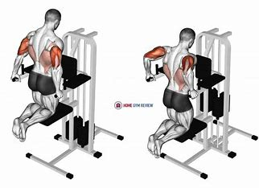
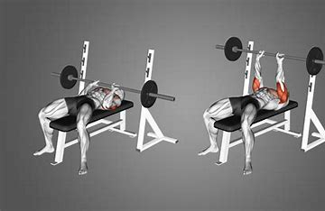
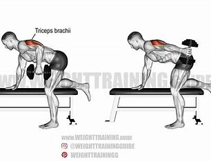
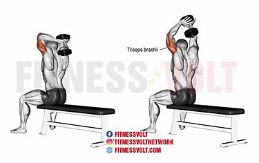
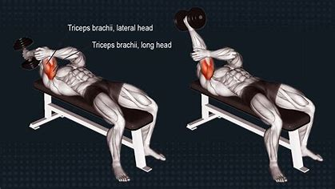
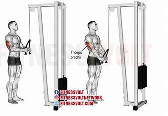
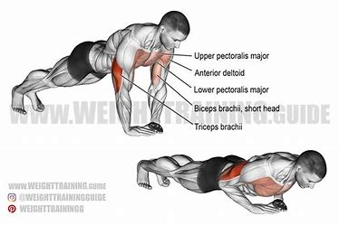

Triceps Workouts
1. Triceps Dips

Place your hands on a bench or chair, with your legs extended in front of you.
Lower your body by bending your elbows until your upper arms are parallel to the ground.
Push yourself back up to the starting position.
2. Close-Grip Bench Press

Lie on a bench and grab the barbell with a close grip.
Lower the bar to your chest, keeping your elbows close to your body.
Push the bar back up to the starting position.
3. Triceps Kickbacks

Hold a dumbbell in each hand.
Bend forward at the waist with your knees slightly bent.
Keep your upper arms close to your torso and extend your forearms back, squeezing your triceps at the top.
4. Overhead Triceps Extension

Hold a dumbbell with both hands and lift it overhead.
Keep your upper arms close to your head and lower the weight behind your head.
Extend your arms back to the starting position.
5. Skull Crushers

Lie on a bench with a barbell or dumbbells.
Extend your arms over your chest and lower the weight towards your forehead by bending your elbows.
Push the weight back up to the starting position.
6. Rope Triceps Pushdown

Attach a rope handle to a high pulley.
Stand facing the pulley and grab the rope with both hands.
Push the rope down, separating your hands at the bottom.
Slowly return to the starting position.
7. Diamond Push-Ups

Get into a push-up position with your hands close together under your chest, forming a diamond shape with your fingers.
Lower your body until your chest nearly touches the ground.
Push back up to the starting position.
Go Back